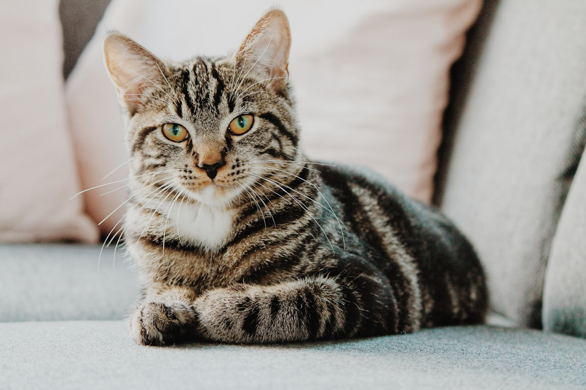

Persa
Calmo & aristocrático
Pelagem longa e densa, focinho achatado. Temperamento dócil, tranquilo e caseiro — adora colo e ambientes silenciosos.
Um guia ilustrado e completo para a Especialidade de Felinos: anatomia, raças, espécies selvagens, recordes do reino animal, curiosidades e histórias.
O nome científico da família do gato é Felidae. Pertence à ordem Carnivora e reúne, hoje, cerca de 40 espécies espalhadas por quase todos os continentes — do gato doméstico ao tigre-de-bengala.
Apesar das diferenças de tamanho, todos os felinos compartilham um mesmo plano corporal e um conjunto notável de características que os tornam predadores excepcionais. São animais ágeis, silenciosos, de visão aguçada, garras retráteis e dentes especializados para uma dieta estritamente carnívora.
Dependem quase totalmente de carne para obter os nutrientes essenciais.
Recolhem as unhas dentro das patas, mantendo-as afiadas (exceto o guepardo).
Pupilas que dilatam fortemente e tapetum lucidum, que reflete a luz na retina.
Detectam ruídos e cheiros imperceptíveis para o ser humano.
Em todos os felinos, a estrutura da pata segue o mesmo princípio: são digitígrados — caminham sobre os dedos, e não sobre toda a sola. Possuem coxins macios que abafam os passos e garras retráteis que se mantêm afiadas porque ficam recolhidas dentro de bainhas. Em geral, têm cinco dedos nas patas dianteiras e quatro nas traseiras.
Os olhos são posicionados na frente do rosto, oferecendo visão binocular e excelente noção de profundidade. A pupila se dilata muito no escuro e, atrás da retina, uma camada chamada tapetum lucidum reflete a luz, dando aos felinos uma visão noturna até seis vezes superior à humana — e o brilho característico no escuro.
Sua alimentação principal é carne. Para isso, a dentição é especializada: caninos longos e curvos para perfurar e segurar a presa, incisivos pequenos para raspar e arrancar, e os dentes carniceiros (molares modificados) que funcionam como tesouras, cortando a carne em pedaços que podem ser engolidos sem mastigar muito.
Os bigodes (vibrissas) são órgãos sensoriais altamente sensíveis. Avisam o animal sobre obstáculos no escuro, indicam se ele consegue passar por uma fresta (têm aproximadamente a largura do corpo) e captam a vibração do ar, ajudando a localizar a presa mesmo a curta distância dos olhos.
Os ouvidos têm forma cônica, giram de forma independente para captar sons em várias direções e são protegidos por uma dobra de pele na base, além de pelos finos no canal auditivo, que impedem a entrada de sujeira, água e insetos.

O gato doméstico (Felis catus) acompanha o ser humano há vários séculos. Existem dezenas de raças, cada uma com personalidade, pelagem e formato próprios.
Pelagem longa e densa, focinho achatado. Temperamento dócil, tranquilo e caseiro — adora colo e ambientes silenciosos.
Corpo esguio, olhos azuis vibrantes e pelos curtos. Muito vocal, inteligente e extremamente apegado ao dono.
Uma das maiores raças do mundo. Apesar do porte, é dócil, brincalhão e sociável — chamado de “cão entre os gatos”.
Pelagem sedosa, geralmente branca. Ativo, curioso e brincalhão; mantém forte vínculo com a família humana.
Desde os celeiros do antigo Egito, gatos prestam serviços valiosos e oferecem companhia. Hoje, vivem em milhões de lares ao redor do mundo.
Caçam ratos, baratas e insetos, protegendo alimentos e a saúde da família.
Reduzem a solidão, especialmente para idosos e crianças.
Estudos mostram que conviver com gatos reduz estresse, ansiedade e até a pressão arterial.
Ensinam crianças a cuidar, respeitar e conviver com seres vivos.
São usados em terapias com pacientes em hospitais, asilos e escolas especiais.
Dos picos do Himalaia às savanas africanas, sete espécies que mostram a diversidade da família Felidae — e os lugares do planeta onde podem ser encontradas.
O maior felino do mundo. Vive em florestas da Ásia, especialmente Índia, Bangladesh e Rússia.
Vive em savanas da África subsaariana e em uma pequena reserva na Índia (Floresta de Gir).
O maior felino das Américas. Encontrada na Amazônia, Pantanal e florestas tropicais.
Vive em savanas, florestas e até áreas montanhosas. Excelente escalador de árvores.
O felino mais veloz do mundo. Vive em savanas e estepes da África e em pequena população no Irã.
Também chamado de suçuarana ou leão-da-montanha. Maior área de distribuição entre os felinos das Américas.
Habita as montanhas mais altas da Ásia Central, em altitudes acima de 3.000 metros.
Felino de médio porte, com pelagem manchada. Vive em florestas tropicais da América Central e do Sul.
Felino de médio porte com orelhas pontudas. Vive em florestas frias e regiões montanhosas.
Quatro perguntas clássicas sobre os felinos — e suas respostas.
Pode ultrapassar 300 kg e 3,3 m de comprimento. Vive nas florestas da Sibéria.
Símbolo do Pantanal e da Amazônia, pode pesar mais de 130 kg.
Atinge até 110 km/h em arrancadas curtas — o animal terrestre mais rápido.
Símbolo de força, mas na natureza é social, vive em alcateias e dorme até 20 horas por dia. Quem caça, na maioria das vezes, são as fêmeas.
Conta a tradição que Androcles era um escravo romano que, fugindo de seu senhor, escondeu-se numa caverna no norte da África. Lá dentro, encontrou um enorme leão que rugia de dor: um espinho cravado em sua pata o atormentava.
Em vez de fugir, Androcles aproximou-se com cuidado, retirou o espinho e cuidou do ferimento. O leão, agradecido, tornou-se seu companheiro. Por anos, dividiram a mesma caverna e o mesmo alimento.
Algum tempo depois, Androcles foi capturado e condenado a morrer no Coliseu, devorado por feras. Soltaram contra ele um leão faminto. Mas, ao chegar perto, o animal parou — era o mesmo leão a quem ele havia ajudado. Em vez de atacar, deitou-se aos seus pés.
Espantado, o imperador perdoou Androcles e libertou o leão. A história, contada pelos romanos e recontada por séculos, lembra que a bondade é reconhecida até pelas feras mais ferozes — e que um gesto de compaixão pode mudar um destino.
Embora o gato doméstico não seja diretamente citado nas Escrituras, leões e leopardos aparecem dezenas de vezes — em narrativas, profecias e símbolos.
Sansão, indo a Timna, foi atacado por um leão jovem. Pelo Espírito do Senhor, despedaçou-o com as mãos. Tempos depois, encontrou no corpo do animal um enxame de abelhas e mel, do qual surgiu seu famoso enigma.
Antes de enfrentar Golias, o jovem Davi conta a Saul que, como pastor, havia matado um leão e um urso que vieram atacar suas ovelhas — sinal da proteção de Deus em sua vida.
Por causa de sua fidelidade a Deus, Daniel foi lançado numa cova cheia de leões. O Senhor enviou um anjo que fechou a boca dos animais, e Daniel saiu ileso na manhã seguinte.
Um profeta de Judá, depois de desobedecer à ordem do Senhor, foi morto por um leão no caminho — um animal que, milagrosamente, não devorou o corpo nem atacou o jumento, sinal do juízo divino.
Cristo é apresentado como “o Leão da tribo de Judá, a Raiz de Davi”, que venceu para abrir o livro selado — símbolo de força, realeza e vitória.
“Pode, porventura, o etíope mudar a sua pele, ou o leopardo as suas manchas?” — usado por Jeremias como imagem da dificuldade de mudar um coração endurecido pelo pecado.
Os músculos das patas traseiras são extremamente fortes, permitindo saltos impressionantes a partir do repouso.
Como predadores, conservam energia para os momentos de caça — instinto preservado mesmo no gato doméstico.
Coberta por pequenos ganchos (papilas) que servem para se higienizar e raspar a carne dos ossos.
Enxergam em níveis de luz muito baixos, mas precisam de um mínimo de luminosidade — não veem no escuro absoluto.
Os demais felinos são, em geral, solitários. As alcateias de leões são chamadas de “orgulho” (em inglês, pride).
Servem para caçar, escalar, marcar território e se defender. No guepardo, são pouco retráteis e funcionam como travas de corrida.